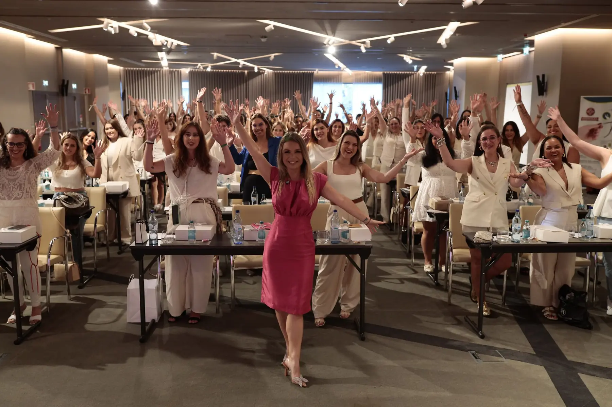
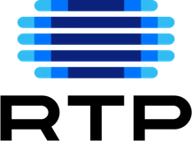
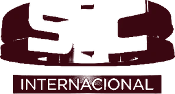
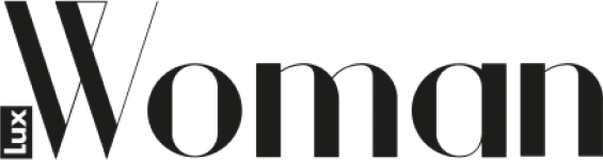

Método LIV: Liberdade, Identidade e Valor
A tua prosperidade nunca vai além de quem acreditas ser
Dois dias presenciais para empresários e líderes que sabem que o negócio cresce até onde cresce quem o lidera.
27 e 28 de fevereiro de 2027
Quero o meu lugarO Método LIV
Tudo começa em quem és
Quase nunca é falta de esforço ou de estratégia, é a imagem que tens de ti a decidir até onde vais tu e até onde vai o teu negócio.
- L
Liberdade
Voltas a decidir a partir de ti, na vida e na empresa, e não do que os outros esperam de ti.
- I
Identidade
Descobres quem és como pessoa e como líder, e o padrão que mantém os teus resultados no mesmo patamar.
- V
Valor
Reconheces o teu valor e passas a posicioná-lo com segurança diante da tua equipa, dos teus clientes e do mercado.

Dois dias com a Mafalda
O que levas destes dois dias
Clareza sobre quem és e sobre o padrão que tem travado o teu crescimento e o da tua empresa.
Uma nova relação com o teu valor, que se nota na forma como lideras, negocias e te posicionas.
Coragem para as próximas decisões, na vida e nos negócios.
27 e 28 de fevereiro de 2027
Quem te conduz
Mafalda Almeida
«Ajudo pessoas e empresas poderosas a recordar o quão poderosas são.»
Fundadora e CEO do Rising Group, é mentora de negócios na Nova School of Business and Economics e docente na pós-graduação de Empreendedorismo e Negócios da Universidade Europeia.
Palestrante internacional e coach executiva certificada pela International Coaching Community, acompanha líderes, empresários e equipas há quase dez anos, em sessões individuais, programas de liderança e mentoria.



Inscrição · 27 e 28 de fevereiro de 2027
O teu próximo patamar começa em fevereiro
«O poder está em ti.»
Mafalda Almeida
Bilhete individual
49,97 €
1 pessoa
- Dois dias presenciais com a Mafalda Almeida
- O Método LIV completo: Liberdade, Identidade e Valor
Para ti e para quem lidera contigo
Bilhete duplo
79,97 €
2 pessoas · 39,99 € por pessoa · poupas 19,97 €
- Dois dias presenciais com a Mafalda Almeida, para duas pessoas
- O Método LIV completo: Liberdade, Identidade e Valor
IVA incluído · Pagamento com MB WAY, cartão ou Klarna
Tens alguma dúvida antes de garantires o teu lugar?
Falar connosco no WhatsApp